Capturas reales tomadas del navegador ejecutando los archivos del proyecto,
no maquetas. El aviso ámbar de “falta conectar la base de datos” es lo esperado
mientras Supabase no esté configurado.
El acceso · escritorio
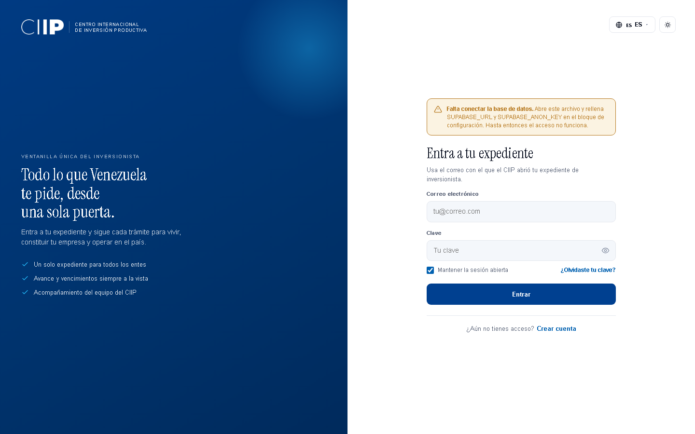
Iniciar sesión · tema claro1440 × 900
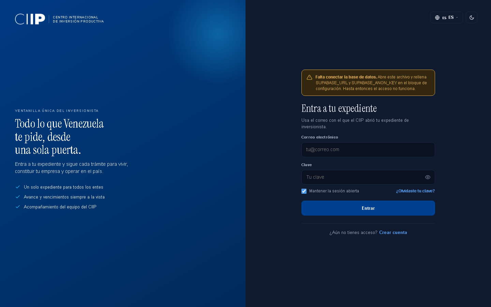
Iniciar sesión · tema oscuro1440 × 900 · el panel de marca se mantiene azul a propósito
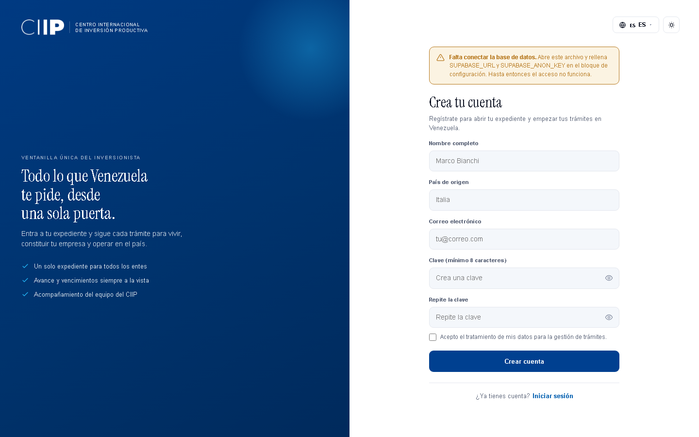
Crear cuentaLa vista más alta: cinco campos. Es la que puede necesitar desplazamiento en pantallas bajas
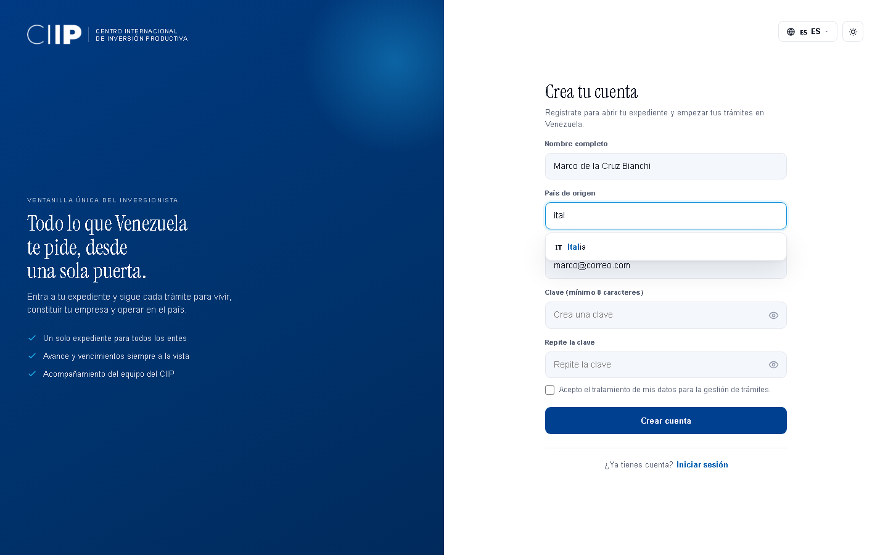
Nombre y país, en acciónSe escribió marco de la cruz bianchi y quedó Marco de la Cruz Bianchi — las partículas en minúscula. Debajo, el buscador filtrando por “ital”
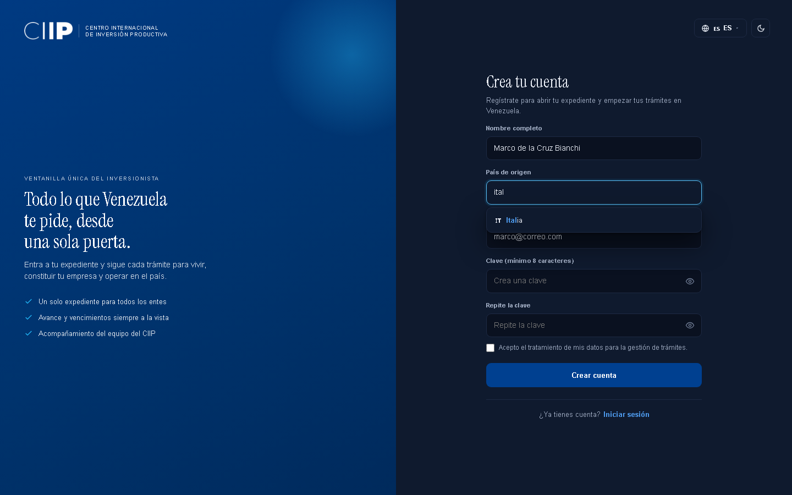
Lo mismo · tema oscuro1440 × 900
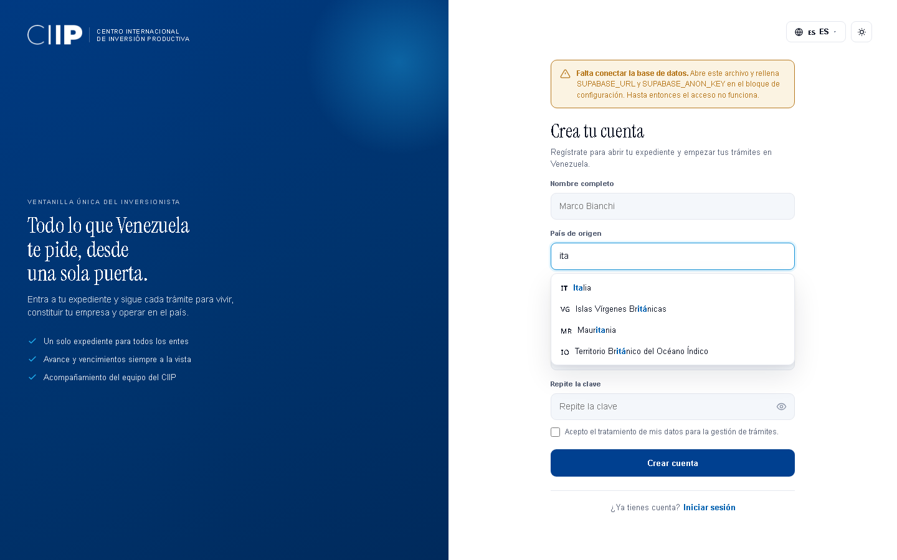
Buscador de paísesEscribiendo “ita”. Bandera, coincidencia resaltada, y los nombres en el idioma activo
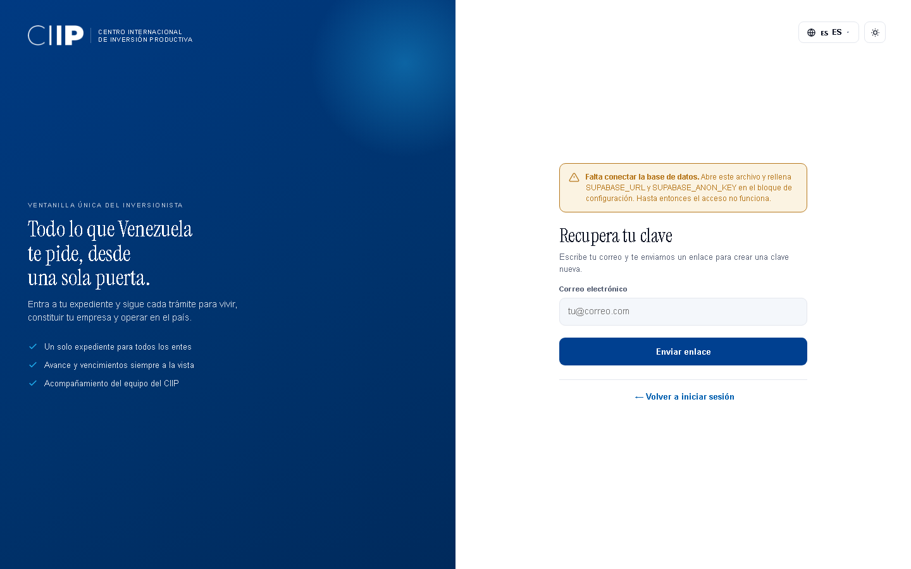
Recuperar claveUn solo campo
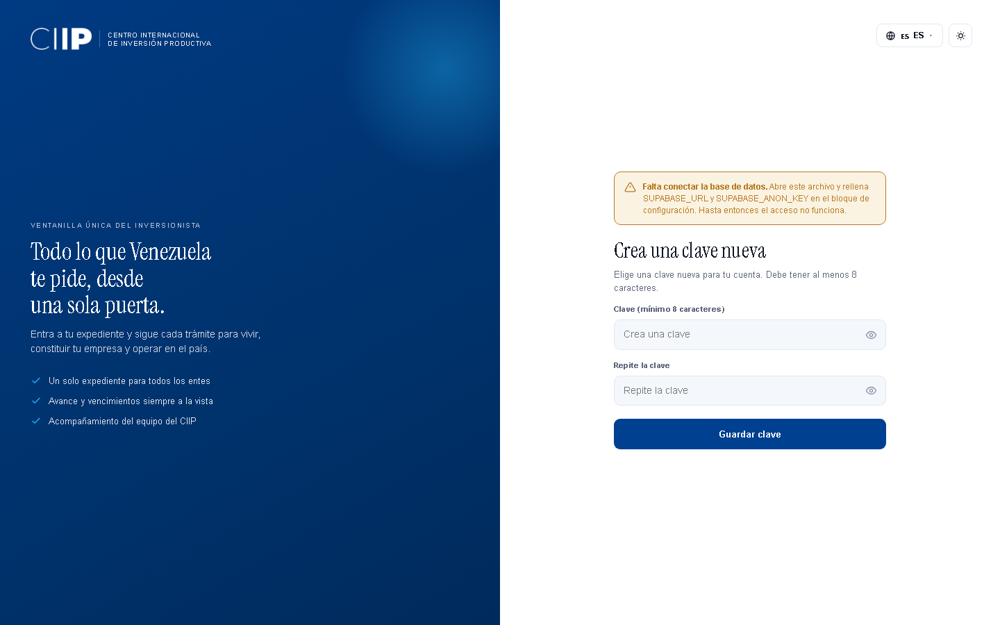
Clave nuevaA esta vista se llega desde el enlace del correo
El acceso · móvil
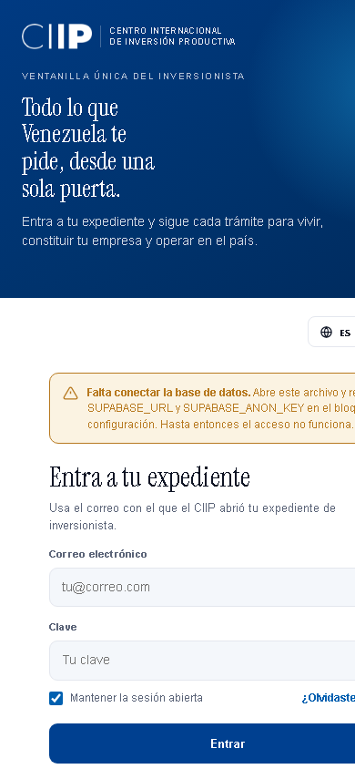
Iniciar sesión390 × 844 · los paneles se apilan
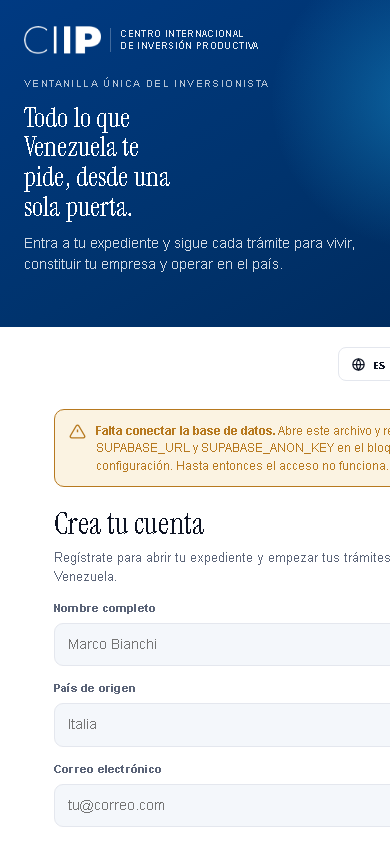
Crear cuenta390 × 844
El panel, una vez dentro
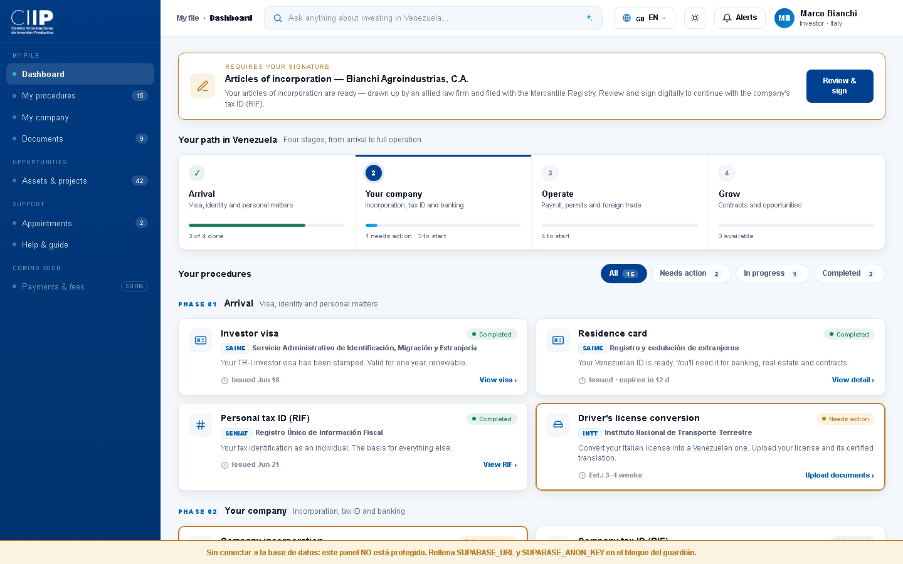
Panel · tema claroAbajo del todo aparece la franja ámbar: sin Supabase, el panel no está protegido
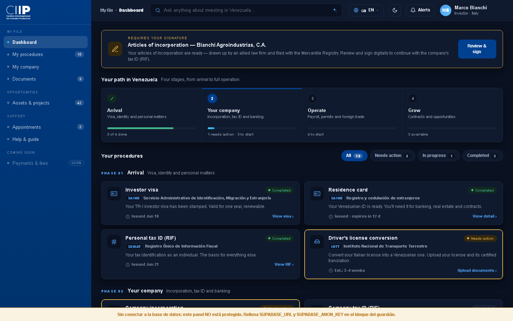
Panel · tema oscuroAquí se comprueba el arreglo del logo del pie, que antes era invisible
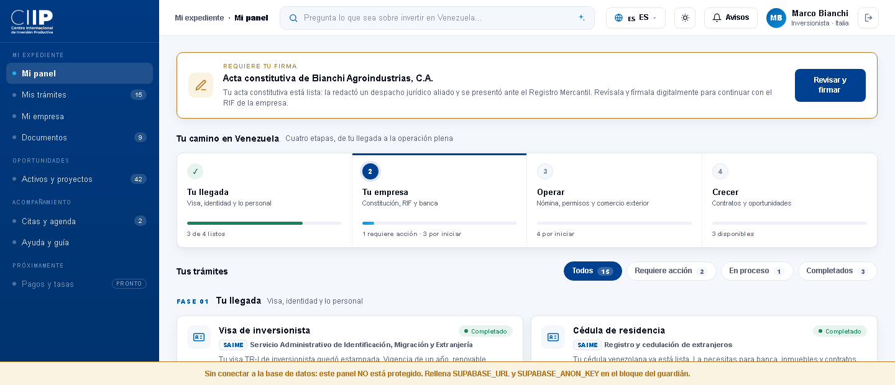
Cerrar sesión · tema claroÚltimo botón de la barra, tras el chip del usuario
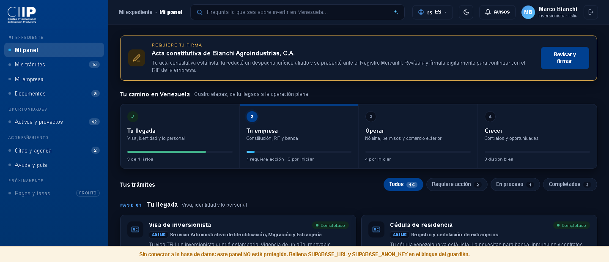
Cerrar sesión · tema oscuroMismo botón de 34 px que el de tema; al pasar por encima tira a rojizo
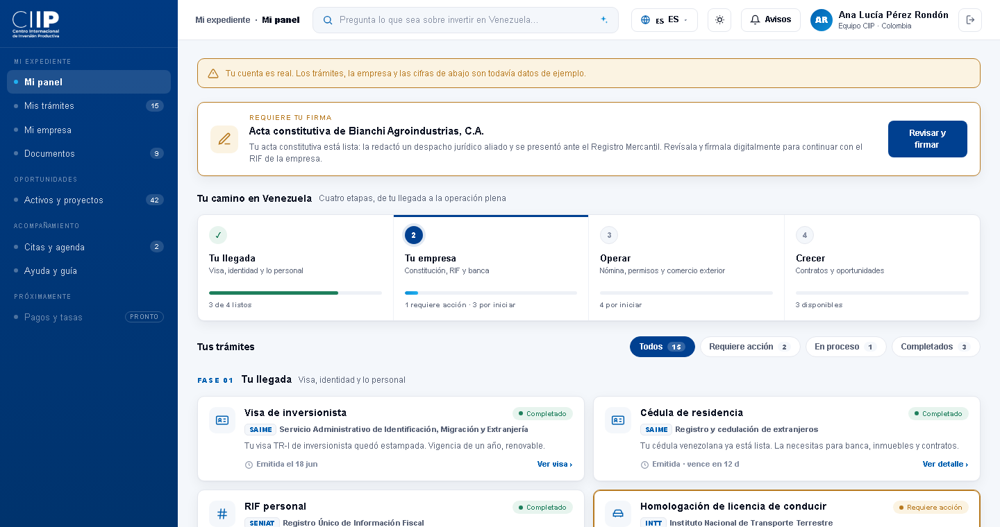
Panel con sesión realNombre, iniciales, rol y país salen de public.perfiles. Arriba, el aviso de que los trámites siguen siendo de ejemplo
Para regenerarlas después de cualquier cambio, vuelve a pedírmelo o lanza
PROBAR.bat para las pruebas funcionales. Los datos del panel
(“Marco”, “Bianchi Agroindustrias”) siguen siendo de demostración: el guardián
ya comprueba quién entra, pero el contenido todavía no cambia según el usuario.